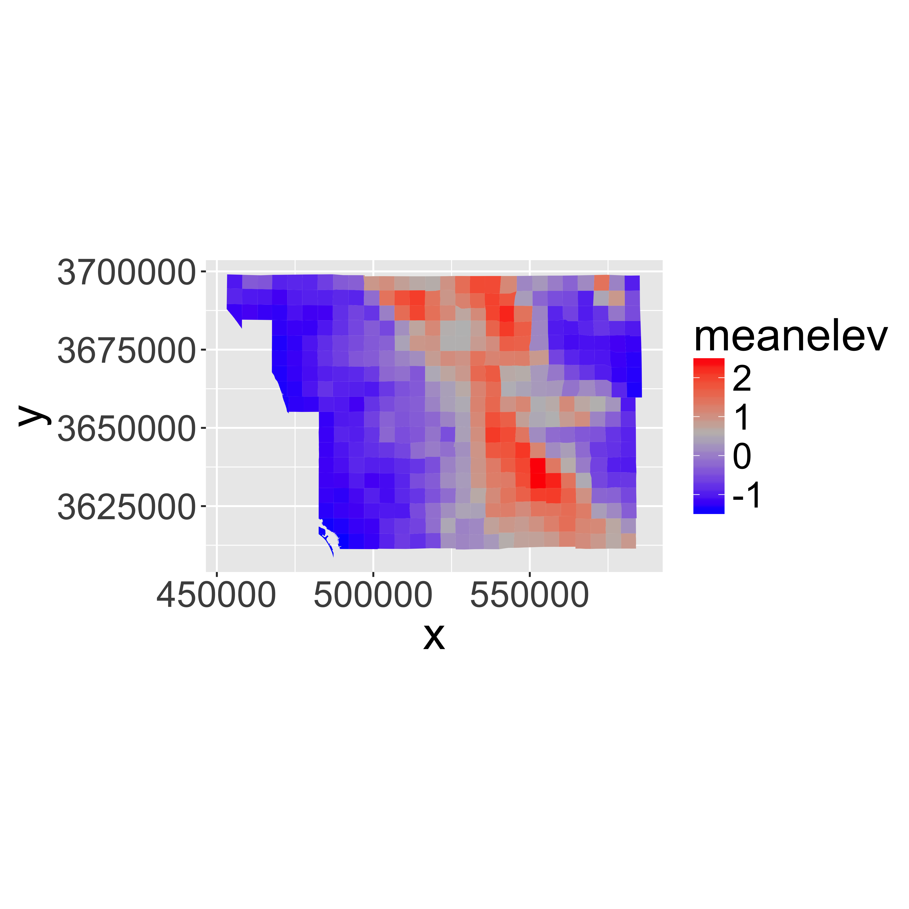
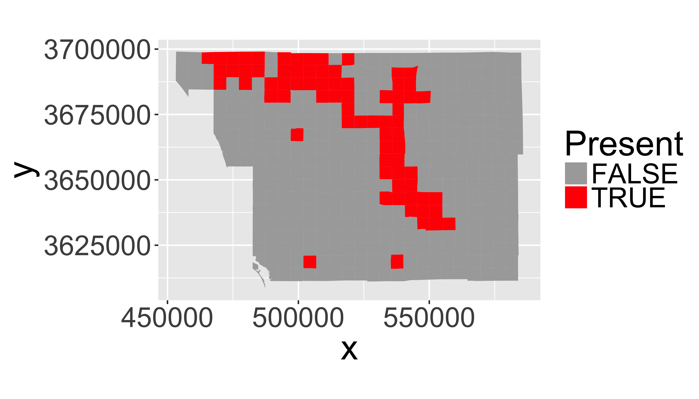
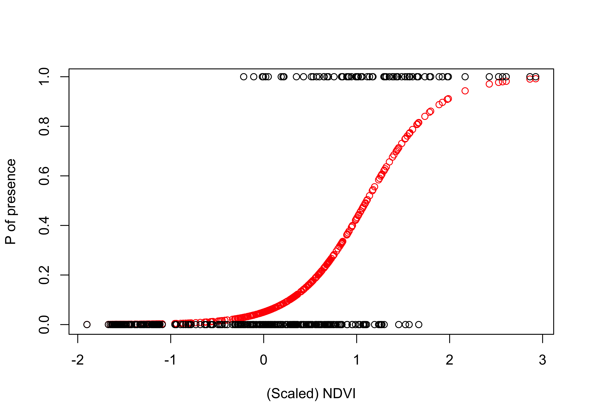
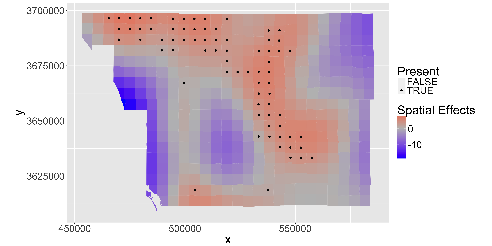
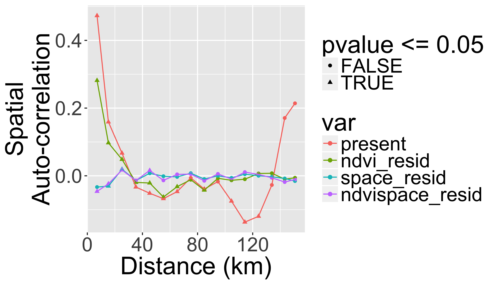

Spatially-explicit logistic regression
library(knitr)
library(raster)
library(rasterVis)
library(dplyr)
library(ggplot2)
# devtools::install_github("dkahle/ggmap")
library(ggmap)
library(rgdal)
library(sp) # handles spatial data
## New Packages
library(mgcv) # package for Generalized Additive Models
library(ncf) # has an easy function for correlograms
library(grid)
library(gridExtra)
library(xtable)
library(maptools)Goal of this class
- To demonstrate a simple presence/absence modelling in spatial context.
- To model spatial dependence (autocorrelation) in the response.
Overview of R’s spatial toolset is here.
What is spatial autocorrelation?
Today we will model space by smooth splines in mgcv package.
Examples of Alternative approaches:
- Simple polynomials
- Eigenvector Mapping:
vegan,spdep - Predictive process:
spbayes
Methods that tweak variance-covariance matrix of Multivariate Normal Distribution:
- Generalized Least Squares:
MASS,nlme - Autoregressive Models:
spdep - GeoBUGS module in OpenBUGS
See Dormann et al. 2007 Ecography, 30: 609-628 for a review.
Species Distribution Modeling
We’ll attempt to explain the spatial distribution of the Purple finch (Carpodacus purpureus) in San Diego county, California:

purple finch figure
(photo/Wikimedia)
Preparing the data
Load a vector dataset (shapefile) representing the San Diego bird atlas data for the Purple finch:
finch <- readOGR(system.file("extdata", "finch",
package = "DataScienceData"),
layer="finch")## OGR data source with driver: ESRI Shapefile
## Source: "/Library/Frameworks/R.framework/Versions/3.4/Resources/library/DataScienceData/extdata/finch", layer: "finch"
## with 414 features
## It has 26 fields
## Integer64 fields read as strings: vegtypes## add centroid locations to dataframe
finch@data[,c("x","y")]=coordinates(finch)
projection(finch)="+proj=utm +zone=11 +ellps=GRS80 +datum=NAD83 +units=m +no_defs "Plot the shapefile
Plot the finch dataset over a google map layer.
First convert to latitude-longitude
finchll=spTransform(finch,CRS("+proj=longlat +datum=WGS84"))Get a google map image for the background
map_usa=get_map("usa", zoom = 4,
maptype = "terrain-background",
source="stamen")
map_sd=get_map(bbox(finchll), zoom = 9,
maptype="terrain-background",
source="stamen")Build the ggplot objects
m1=ggmap(map_usa,extent = "device")+
geom_polygon(aes(y=lat,x=long,group=group,order=order),
data=fortify(finchll),fill="transparent",colour="red",size=2)+
ylab("")+xlab("")## Warning: Ignoring unknown aesthetics: orderm2=ggmap(map_sd)+
geom_polygon(aes(y=lat,x=long,group=group,order=order),
data=fortify(finchll),fill="transparent",colour="red")+
ylab("Latitude")+xlab("Longitude")## Warning: Ignoring unknown aesthetics: orderDraw the plot with an inset using viewport()
viewport() in the grid package allows you to put graphical objects anywhere in the plotting region. Use it to draw the USA map as an inset to show the location of region with respect to the US.
print(m2)
print(m1,vp=viewport(width=.25,height=.25,x=.8,y=.8))
Your Turn
Explore adjusting the viewport() parameters to see how it moves around. Can you move it to lower right corner? Note that the positions (e.g. width, height, x, and y) are all with respect to the full plotting domain, so if you change the aspect ratio of the plotting window, things will move around…
Explore the data
Now look at the associated data frame (analogous to the *.dbf file that accompanied the shapefile):
kable(head(finch@data))| RC | FID_ATLAS1 | AREA | ID_COARSE | FID_ATLA_1 | AREA_1 | PERIMETER | BIRD_ATLAS | BIRD_ATL_1 | TRQ | BLOCKNAME | area_mdm | X_CEN | Y_CEN | ndvi | meanelev | minelev | maxelev | vegtypes | maxtmp | mintmp | meanppt | summert | wintert | urban | present | x | y | |
|---|---|---|---|---|---|---|---|---|---|---|---|---|---|---|---|---|---|---|---|---|---|---|---|---|---|---|---|---|
| 0 | C-9 | 0 | 214130000 | c1 | 11 | 24584734 | 19799.74 | 13 | 13 | T09R3WNE | Rainbow | 24584493 | -117.16 | 33.41 | 129.42 | 336.60 | 155.84 | 560.32 | 19 | 32.35 | 4.21 | 318.74 | 23.32 | 11.68 | 10.48 | 1 | 484697.5 | 3696562 |
| 1 | C-10 | 0 | 214130000 | c1 | 12 | 23355580 | 19452.50 | 14 | 14 | T09R2WNW | Mt. Olympus | 23355572 | -117.11 | 33.40 | 123.24 | 470.04 | 173.03 | 675.84 | 16 | 32.30 | 3.64 | 346.14 | 23.35 | 10.95 | 1.98 | 0 | 489596.3 | 3696506 |
| 2 | C-11 | 0 | 214130000 | c1 | 22 | 23534602 | 19300.92 | 24 | 24 | T09R2WNE | Trujillo Creek | 23534551 | -117.05 | 33.40 | 123.20 | 498.70 | 159.22 | 1008.56 | 22 | 32.88 | 3.55 | 342.89 | 23.58 | 10.94 | 0.83 | 1 | 494551.9 | 3696394 |
| 3 | D-10 | 0 | 214130000 | c1 | 43 | 24535492 | 19734.56 | 45 | 45 | T09R2WSW | Gomez Creek | 24535492 | -117.11 | 33.36 | 127.96 | 244.19 | 87.45 | 552.72 | 25 | 32.88 | 4.57 | 301.73 | 23.58 | 12.19 | 1.17 | 0 | 489578.7 | 3691662 |
| 4 | D-11 | 0 | 214130000 | c1 | 45 | 23853714 | 19508.38 | 47 | 47 | T09R2WSE | Pala | 23853715 | -117.05 | 33.36 | 112.45 | 228.60 | 110.70 | 611.51 | 27 | 33.55 | 4.75 | 292.65 | 24.08 | 12.36 | 8.55 | 1 | 494531.9 | 3691600 |
| 5 | D-9 | 0 | 214130000 | c1 | 46 | 23849098 | 19561.19 | 48 | 48 | T09R3WSE | Monserate Mt. | 23849098 | -117.16 | 33.36 | 142.05 | 208.33 | 82.69 | 471.35 | 23 | 32.47 | 4.93 | 288.07 | 23.17 | 12.37 | 12.26 | 1 | 484658.0 | 3691653 |
Note: in your final projects, don’t simply print out large tables or outputs… Filter/select only data relevent to tell your ‘story’…
Scaling and centering the environmental variables
Statistical models generally perform better when covariates have a mean of zero and variance of 1, using the scale() function:
kable(finch@data[1:5,c(15:18,20:25)])| ndvi | meanelev | minelev | maxelev | maxtmp | mintmp | meanppt | summert | wintert | urban | |
|---|---|---|---|---|---|---|---|---|---|---|
| 0 | 129.42 | 336.60 | 155.84 | 560.32 | 32.35 | 4.21 | 318.74 | 23.32 | 11.68 | 10.48 |
| 1 | 123.24 | 470.04 | 173.03 | 675.84 | 32.30 | 3.64 | 346.14 | 23.35 | 10.95 | 1.98 |
| 2 | 123.20 | 498.70 | 159.22 | 1008.56 | 32.88 | 3.55 | 342.89 | 23.58 | 10.94 | 0.83 |
| 3 | 127.96 | 244.19 | 87.45 | 552.72 | 32.88 | 4.57 | 301.73 | 23.58 | 12.19 | 1.17 |
| 4 | 112.45 | 228.60 | 110.70 | 611.51 | 33.55 | 4.75 | 292.65 | 24.08 | 12.36 | 8.55 |
envi <- finch@data[,c(15:18,20:25)]
envi.scaled <- as.data.frame(scale(as.matrix(envi)))
finch@data[,c(15:18,20:25)] <- envi.scaledThe predictor (NDVI)
Plot a chloropleth
From Wikipedia:
A choropleth (from Greek χώρο (“area/region”) + πλήθος (“multitude”)) is a thematic map in which areas are shaded or patterned in proportion to the measurement of the statistical variable being displayed on the map, such as population density or per-capita income.
By default, the rownames in the dataframe are the unique identifier (e.g. the FID) for the polygons.
## add the ID to the dataframe itself for easier indexing
finch$id=as.numeric(rownames(finch@data))
## create fortified version for plotting with ggplot()
pfinch=fortify(finch,region="id")
ggplot(finch@data, aes(map_id = id)) +
expand_limits(x = pfinch$long, y = pfinch$lat)+
scale_fill_gradientn(colours = c("grey","goldenrod","darkgreen","green"))+
coord_equal()+
geom_map(aes(fill = ndvi), map = pfinch)
Your turn
Explore the other variables in the finch dataset with summary(finch). Plot a map of the mean elevation in each region.
ggplot(finch@data, aes(map_id = id)) +
expand_limits(x = pfinch$long, y = pfinch$lat)+
scale_fill_gradientn(colours = c("blue","grey","red"))+
coord_equal()+
geom_map(aes(fill = meanelev), map = pfinch)
Use grid.arrange() to plot multiple plots in the same figure.
p1=ggplot(finch@data, aes(map_id = id)) +
expand_limits(x = pfinch$long, y = pfinch$lat)+
scale_fill_gradient2(low="blue",mid="grey",high="red")+
coord_equal()+
ylab("")+xlab("")+
theme(legend.position = "top")+
theme(axis.ticks = element_blank(), axis.text = element_blank())
p1a=p1+geom_map(aes(fill = ndvi), map = pfinch)
p1b=p1+geom_map(aes(fill = meanelev), map = pfinch)
p1c=p1+geom_map(aes(fill = urban), map = pfinch)
p1d=p1+geom_map(aes(fill = maxtmp), map = pfinch)
grid.arrange(p1a,p1b,p1c,p1d,ncol=2) 
The response (presences and absences)
ggplot(finch@data, aes(map_id = id)) +
geom_map(aes(fill = as.logical(present)), map = pfinch)+
expand_limits(x = pfinch$long, y = pfinch$lat)+
scale_fill_manual(values = c("darkgrey","red"),name="Present")+
coord_equal()
Fitting the models
Compare three models:
- Only NDVI
- Only Space
- Space and NDVI
Model 1 - only NDVI
Now we will do the actual modelling. The first simple model links the presences and absences to NDVI.
First, we will fit model a model that only uses NDVI as a predictor of presence and absence:
$\log ( \frac{p_i}{1-p_i} ) = \beta_0 + \beta_1 NDVI_i$
oi ∼ Bernoulli(pi)
Note: this assumes residuals are iid (independent and identically distributed).
It can be fitted by simple glm() in R:
ndvi.only <- glm(present~ndvi, data=finch@data, family="binomial")
## and let's extract predictions and residuals:
preds.ndvi.only <- predict(ndvi.only, type="response")
resid.ndvi.only <- residuals(ndvi.only)Now let’s plot the logistic curve:
plot(finch$ndvi,preds.ndvi.only, type="p",
xlab="(Scaled) NDVI", ylab="P of presence", col="red")
points(finch$ndvi, finch$present)
Print a summary table
xtable(ndvi.only,
caption="Model summary for 'NDVI-only'")%>%
print(type="html")| Estimate | Std. Error | z value | Pr(>|z|) | |
|---|---|---|---|---|
| (Intercept) | -2.9388 | 0.2960 | -9.93 | 0.0000 |
| ndvi | 2.6521 | 0.3223 | 8.23 | 0.0000 |
Model 2 - only space
The second model fits only the spatial trend in the data (using GAM and splines):
space.only <- gam(present~s(X_CEN, Y_CEN),
data=finch@data, family="binomial")
## extracting predictions
preds.space.only <- as.numeric(predict(space.only, type="response"))
resid.space.only <- residuals(space.only)Plot the spatial term of the model:
finch$space=as.numeric(predict(space.only,type="terms"))
ggplot(finch@data, aes(x=x,y=y,z=space, map_id = id)) +
geom_map(aes(fill = space), map = pfinch)+
geom_point(aes(col=as.logical(present)))+
expand_limits(x = pfinch$long, y = pfinch$lat)+
scale_fill_gradientn(colours=c("darkblue","blue","grey","yellow","orange","red"))+
scale_color_manual(values=c("transparent","black"),name="Present")+
coord_equal()
Print a summary table
xtable(summary(space.only)$s.table,
caption="Model summary for 'Space-only'")%>%
print(type="html")| edf | Ref.df | Chi.sq | p-value | |
|---|---|---|---|---|
| s(X_CEN,Y_CEN) | 28.83 | 28.98 | 51.06 | 0.01 |
Model 3 - space and NDVI
The third model uses both the NDVI and spatial trends to explain the finch’s occurrences:
space.and.ndvi <- gam(present~ndvi + s(X_CEN, Y_CEN),
data=finch@data, family="binomial")
## extracting predictions and residuals:
preds.space.and.ndvi <- as.numeric(predict(space.and.ndvi, type="response"))
resid.space.and.ndvi <- residuals(space.and.ndvi)Print a summary table
xtable(summary(space.and.ndvi)$s.table,
caption="Model summary for 'Space and NDVI'")%>%
print(type="html")| edf | Ref.df | Chi.sq | p-value | |
|---|---|---|---|---|
| s(X_CEN,Y_CEN) | 23.35 | 25.84 | 47.74 | 0.01 |
Plot the spatial term of the model:
finch$ndvispace=as.numeric(predict(space.and.ndvi,type="terms")[,2])
ggplot(finch@data, aes(x=x,y=y, map_id = id)) +
geom_map(aes(fill = ndvispace), map = pfinch)+
geom_point(aes(col=as.logical(present)))+
expand_limits(x = pfinch$long, y = pfinch$lat)+
scale_fill_gradient2(low="blue",mid="grey",high="red",name="Spatial Effects")+
scale_color_manual(values=c("transparent","black"),name="Present")+
coord_equal()
Examine the fitted models
Now let’s put all of the predictions together:
predictions <- data.frame(id=finch$id,
x=finch$x,
y=finch$y,
present=finch$present,
ndvi= preds.ndvi.only,
ndvi_resid= resid.ndvi.only,
space = preds.space.only,
space_resid = resid.space.only,
ndvispace= preds.space.and.ndvi,
ndvispace_resid= resid.space.and.ndvi)Combine all the predictions into a single long table:
library(reshape2)
predictionsl= melt(predictions,
variable.name="var",
id.vars=c("id","x","y"),
measure.vars=c(
"present",
"ndvi","ndvi_resid",
"space","space_resid",
"ndvispace","ndvispace_resid"))Plot predictions from the three models, together with the observed presences and absences:
ggplot(filter(predictionsl,!grepl("resid|present",var)), aes(map_id = id)) +
geom_map(aes(fill = value), map = pfinch)+
facet_wrap(~var)+
geom_point(data=finch@data,aes(x=x,y=y,col=as.logical(present)),size=.5)+
scale_color_manual(values=c("transparent","black"),name="Present")+
expand_limits(x = pfinch$long, y = pfinch$lat)+
scale_fill_gradientn(colours = c("blue","grey","red"))+
coord_equal()+
theme(axis.ticks = element_blank(), axis.text = element_blank())
Model comparison
We can compare model performance of the models with Akaike’s Information Criterion (AIC). This uses the formula −2 * log − likelihood + k * npar, where
- npar number of parameters in the fitted model
- k = 2 penalty per parameter
Lower is better…
kable(AIC(ndvi.only, space.only, space.and.ndvi))| df | AIC | |
|---|---|---|
| ndvi.only | 2.00000 | 232.6058 |
| space.only | 29.83231 | 183.7504 |
| space.and.ndvi | 25.35174 | 165.7837 |
Spatial Autocorrelation of Residuals
Should always check the spatial correlation in model residuals to evaluate assumptions. We will use the function correlog from the ncf package. An overview of other functions that plot correlograms is here..
inc=10000 #spatial increment of correlogram in m
cor=predictionsl%>%
filter(grepl("present",var)|grepl("resid",var))%>%
group_by(var)%>%
do(var=.$var,cor=correlog(.$x,.$y,.$value,increment=inc, resamp=100))%>%
do(data.frame(
var=.$var[[1]],
Distance = .$cor$mean.of.class/1000,
Correlation=.$cor$correlation,
pvalue=.$cor$p))And we can plot the correlograms:
ggplot(cor,aes(x=Distance,y=Correlation,col=var,group=var))+
geom_point(aes(shape=pvalue<=0.05))+
geom_line()+
xlab("Distance (km)")+ylab("Spatial\nAuto-correlation")
What did we gain by making the model “spatially explicit”?
- We know that the effect of NDVI is not artificially amplified by pseudoreplication.
- We have more realistic predictions.
- We have a fitted surface that can be interpreted – perhaps to guide us towards some additional spatially-structured predictors that can be important.
Your turn
Try adding additional co-variates into the spatial model (e.g. elevation or climate).
m1 <- gam(present~ndvi+meanelev+
wintert+meanppt+urban +
s(X_CEN, Y_CEN),
data=finch@data, family="binomial")
m2 <- gam(present~ndvi+meanppt +
s(X_CEN, Y_CEN),
data=finch@data, family="binomial")Print a summary table
xtable(summary(m1)$p.table)%>%
print(type="html")| Estimate | Std. Error | z value | Pr(>|z|) | |
|---|---|---|---|---|
| (Intercept) | -5.82 | 2.12 | -2.75 | 0.01 |
| ndvi | 2.11 | 0.79 | 2.67 | 0.01 |
| meanelev | -4.91 | 4.83 | -1.02 | 0.31 |
| wintert | -2.26 | 4.06 | -0.56 | 0.58 |
| meanppt | 4.28 | 3.21 | 1.33 | 0.18 |
| urban | 0.12 | 0.74 | 0.17 | 0.87 |
Compare all models
kable(AIC(ndvi.only,
space.only,
space.and.ndvi,
m1,m2))| df | AIC | |
|---|---|---|
| ndvi.only | 2.00000 | 232.6058 |
| space.only | 29.83231 | 183.7504 |
| space.and.ndvi | 25.35174 | 165.7837 |
| m1 | 28.91842 | 170.0102 |
| m2 | 26.15856 | 165.7332 |